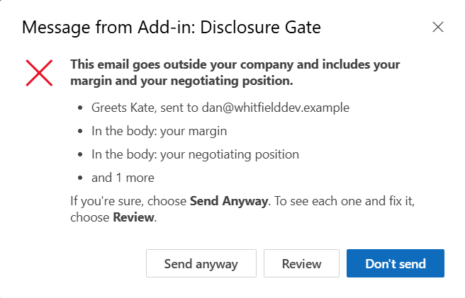

Disclosure Gate for Outlook
Asks before it leaves.
When you press Send, Disclosure Gate checks your email or meeting invitation on your device. If it goes outside your company with something that should stay inside, it explains the concern and asks if you're sure. Choose Send Anyway, Review, or Don't Send. You don't have to reword an intentional disclosure.
Your IT team can require a hold, separately for findings and for checks that fail. Both settings start on Ask.
Set it up for your organizationSource on GitHub

What it looks for
- Passwords, keys and codes. A password or PIN that is actually given, a login with its password, API keys and tokens (AWS, GitHub, Slack, Stripe, Google, OpenAI, Anthropic), private keys, JSON Web Tokens, database connection strings, and door, gate, alarm or Wi-Fi codes.
- Card and bank details. Card numbers that pass the Luhn check, valid IBANs, US routing numbers with an account number, UK sort codes with an account number.
- Government ID numbers. US Social Security, UK National Insurance and Canadian SIN numbers, and passport, licence and personal tax ID numbers.
- Lookalike addresses. An address that looks like your company's but isn't, such as
north1ine.comfornorthline.com. - Exposed recipient lists. Eight or more outside addresses from three or more organizations in To and Cc. The sender is asked to use Bcc and can still send.
- Lists of people's details. A spreadsheet, table or form that pairs people with what is sensitive about them: home addresses, ID or tax numbers, health, offences, pay, family members, claims.
- Wrong recipient. A greeting to someone who isn't on the recipient lines, such as "Hi Alex," sent only to Morgan Vale.
- Marked internal. "Internal only", "not for external distribution" or "don't forward this to the client" in an email going outside.
- Files it can't read. An attachment whose text it can't check, such as a ZIP file or an attached email, going outside.
- Text in pictures and scans. Supported PDF image pages (including pages beside native text) and pictures embedded in Word, Excel and PowerPoint receive English OCR on the device. Native and OCR text are checked together. An unreadable attached or embedded picture asks the sender to look, with Send Anyway; pending OCR or incomplete PDF coverage follows IT's failures setting. Changed bytes, API/identity errors, timeouts and cache limits also follow the failures setting.
OCR has limits: up to 12 pictures and 12 megapixels per file, and 12 pages for PDFs. The PDF scan reader supports JPEG and simple RGB/gray images, not a full renderer; masks, clipping, painting, inline PDF images and image-bearing annotations can't be checked. Unmapped PDF text, Type3 glyph programs, tiling patterns and forms nested beyond eight levels also can't be checked; native reading does not interpret text drawn only as vector outlines. Office micro-images up to 8×8 pixels and 256 bytes and cached preview thumbnails are ignored unless a thumbnail is used as document content; larger logos may contain words. SVG text is read natively; SVG embedded images, unsupported Office picture formats and Office picture-count/pixel overflows ask. XML depth/work limits fail closed. OCR needs a capable runtime; if it cannot run, the same failure or picture choice applies.
Also, more narrowly: your own margins and costs, your negotiating position, personal details about someone (health, family, legal, HR) and insults. Rules match common phrasings and miss others, so a small on-device model also reads each sentence for these however they're worded. On the latest test set it had never seen, it caught 60 of 60 such disclosures (rules alone: 29) and asked about 2 of 300 everyday outside emails, each with Send Anyway. That set was easier than the one before, where the previous model caught 50 of 60, so expect some misses. IT can switch the model off. Treat the check as a second pair of eyes, not a guarantee.
Email that stays inside your organization is never held. Ordinary business email, including prices and quotes you give customers, invoice and order numbers, and password-reset talk, goes straight through.
Nothing leaves Outlook to be checked
Every check runs inside Outlook on the sender's own device. The add-in is a folder of static files. There is no server, no account, no AI service, no telemetry and no log. It never edits, deletes or sends an email on its own.
The code is open source under the Apache 2.0 license, so your security team can read exactly what runs, or host the files themselves.
How well it works
Measured on real mail: 2,000 outside emails Enron employees sent in 1999–2002 (the public CMU corpus), from mailboxes never used in development, read in full by labelers who could not see which system had asked. A serious disclosure is one that could plausibly cause harm if it reached the wrong eyes.
| Setting | Serious disclosures caught | Emails asked about |
|---|---|---|
| Rules, recipient checks and the on-device model (default) | 61 | 700 of 2,000 (35%) |
| Rules and recipient checks only (model off) | 19 | 53 of 2,000 (2.7%) |
About 96 of the 2,000 carried a serious disclosure (62 found among the emails any system asked about, about 34 more estimated from a random sample of the rest), so the default catches roughly two in three, asking about one email in three. Enron’s mail is heavy with personal chatter; business mail is likely asked about less, but that is not measured. On the newest blind synthetic set it caught 108 of 120 disclosures.
It is tuned to catch rather than miss: a question on an ordinary email costs one click. On 49 real, documented email incidents rebuilt with invented names, it asks about 35. Attachments saved from Word and Chrome read in full: 36 of 36 everyday documents, with every amount, name and accented or non-Latin word intact. On 1,586 public test files built to break document readers (Mozilla's PDF and Apache's Office collections), nothing crashed or hung, and a file it can't read completely says so and asks rather than passing on the part it could read. None of these tests measure accuracy on your own mail. How it was tested, including the attempts that failed.
Install in about five minutes
A Microsoft 365 admin installs it once for everyone. Users don't do anything.
- Make your manifest. On the setup page, choose Ask or Hold for findings and for failed checks. Both default to Ask. Add your other internal domains; your own domain is always inside.
- Upload it. In the Microsoft 365 admin center, go to Settings > Integrated apps > Upload custom apps and choose the manifest.
- Assign it. Pick the users or groups. Microsoft can take up to a day to deliver it to Outlook.
- If either setting is Hold, set three Outlook policies for offline/load/Simple MAPI cases. The README lists them.
Ask suits most teams: the sender sees the concern and decides. Hold is for teams whose policy requires a change before sending. With both settings on Ask, even if the add-in can't load, Outlook still lets people send. Older Outlook versions can't ask, so with a Hold setting they hold everything that would otherwise ask.
Where it works
Outlook on the web, the new Outlook for Windows, classic Outlook for Windows (version 2206 or later) and Outlook for Mac (16.65 or later), with Exchange Online.
Meeting invitations are checked when sent from their own window; on the web and in the new Outlook, invitations sent from the small built-in form, forwarded meetings and attendee replies aren't. It also doesn't see items protected so that add-ins can't read them, mail sent from phones, other apps or scripts, or anything Exchange changes after Send. Hold settings also need the Outlook policies in the README.